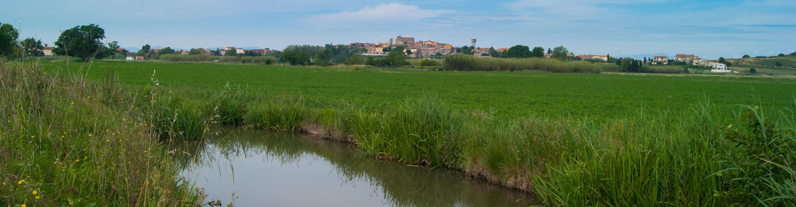

Ruta · Montgrí
Aquesta ruta circular fa una volta a l'antic Estany de Bellcaire , dessecat al segle XVIII, on actualment podem gaudir d'un paisatge rural típic empordanès amb canals , arrossars , fruiters, camps…